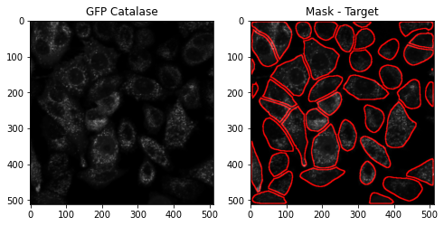

The CellPose method (publish by Stinger et. al. ) uses a neural network (NN) to detect and segment cells from an input image. The NN is trained on a dataset of labeled images, with the labels indicating which pixels belong to each cell. After training, the network is able to accurately identify cells in a new image. CellPose also allows for the detection of multiple cells in an image, allowing for the analysis of cell colonies.
In conclusion, the CellPose method provides an efficient and accurate way to segment cells from microscopy images. This method can be used to analyze individual cells or cell colonies, allowing for the accurate measurement of cell features.
Stringer, C., Wang, T., Michaelos, M., & Pachitariu, M. (2021). Cellpose: a generalist algorithm for cellular segmentation. Nature methods, 18(1), 100-106. [bibtex]
We integrated Cellpose with the AIPS platform to enable automatic capture of cell borders.
from AIPyS import AIPS_cellpose as AC
In addation, the compsite_display module for display the mask contour
from AIPyS import AIPS_file_display as afd
Similar to the parametric segmentation method, GFP-expressing Catalase images are uploaded and analyzed using the AIPS_cellpose module.
AIPS_pose_object = AC.AIPS_cellpose(Image_name = 'catGFP.tif', path = 'data', model_type = 'cyto', channels=[0,0])
img = AIPS_pose_object.cellpose_image_load()
The parameter channels=[0,0] indicates input grayscale image.
The module cellpose_segmantation calls for CellPose segmentation algorithm, and returns target mask (in this case “cyto”) and features table.
mask, table = AIPS_pose_object.cellpose_segmantation(image_input=img[0,:,:])
Display cytosolic mask contour using the Compsite_display.
maskContour = afd.Compsite_display(input_image = img[0,:,:], mask_roi = mask, channel= 0).draw_ROI_contour()
